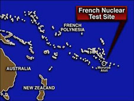

Touch the earth lightly,
use the earth gently,
nourish the life of the world in our care:
gift of great wonder,
ours to surrender,
trust for the children tomorrow will bear.
We who endanger,
who create hunger,
agents of death for all creatures that live,
we who would foster
clouds of disaster--
God of our planet, forestall and forgive!
Let there be greening,
birth from the burning,
water that blesses and air that is sweet,
health in God's garden,
hope in God's children,
regeneration that peace will complete.
God of all living,
God of all loving,
God of the seedling, the snow and the sun,
teach us, deflect us,
Christ reconnect us,
using us gently, and making us one.
Touch the Earth Lightlyhttps://youtu.be/wnWUglp7unQ
a beautiful song considering our place within all of creation.
text Shirley Erena Murray
music Colin Gibson
Further Reflections on Confessions and Statements of Faith References
Here is a song with a
long-neglected message–that God’s people are called to be faithful stewards
of God’s creation. The newer testimonies of the church also carry this
message. Our Song of Hope, stanza 2 admits that “God’s world has been
trapped by our fall, governments trapped by human pride, and nature polluted
by human greed.” Our World Belongs to God, paragraph 16 admits that “All
spheres of life…bear the wounds of our rebellion.” And paragraph 51 calls
God’s people to “lament that our abuse of creation has brought lasting
damage to the world we have been given...” Christian obedience, therefore,
is a call to a pattern of life that will serve the renewal of creation.
Hymn Story/Background
“I came upon this text by Shirley when I was browsing in my
personal library through In Every Corner, Sing: The
Hymns of Shirley Erena Murray (Hope Publishing, 1992).
Admittedly there was already a well-sung tune by Colin
Gibson but I thought it might be interesting to set the text
to a tune that sought to nuance the fragile nature of God’s
creation that requires our tender stewardship. This song
together with my tune to Murray’s “Come and Find the Quiet
Centre” were my initial effort to set her texts following
our meeting at the 1997 World Council of Churches’
Ecumenical Seminar on Liturgy and Music held in Tainan
Theological College and Seminary, Taiwan. In 2012, I
provided a brief write up on this text and tune to Dean B.
McIntyre, Director of Music Resources at the General Board
of Discipleship in Nashville, Tennessee. This can be
accessed at:http://www.gbod.org/lead-your-church/hymn-studies/resource/touch-the-earth-lightly
— Swee Hong Lim
Author Information
Shirley Erena Murray (b. Invercargill, New Zealand, 1931)
studied music as an undergraduate but received a master’s
degree (with honors) in classis and French from Otago
University. Her upbringing was Methodist, but she became a
Presbyterian when she married the Reverend John Stewart
Murray, who was a moderator of the Presbyterian Church of
New Zealand. Shirley began her career as a teacher of
languages, but she became more active in Amnesty
International, and for eight years she served the Labor
Party Research Unit of Parliament. Her involvement in these
organizations has enriched her writing of hymns, which
address human rights, women’s concerns, justice, peace, the
integrity of creation, and the unity of the church. Many of
her hymns have been performed in CCA and WCC assemblies. In
recognition for her service as a writer of hymns, the New
Zealand government honored her as a Member of the New
Zealand Order of Merit on the Queen’s birthday on 3 June
2001. Through Hope Publishing House, Murray has published
three collections of her hymns:In Every
Corner Sing(eighty-four hymns, 1992),Everyday
in Your Spirit(forty-one hymns, 1996),
andFaith Makes the Song(fifty
hymns, 2002). The New Zealand Hymnbook Trust, for which she
worked for a long time, has also published many of her texts
(cf. back cover,Faith Makes the Song).
In 2009, Otaga University conferred on her an honorary
doctorate in literature for her contribution to the art of
hymn writing.
Shirley Erena Murray(b. Invercargill, New
Zealand, 1931)
studied music as an undergraduate but received a master’s
degree (with honors) in classics and French from Otago
University. Her upbringing was Methodist, but she became a
Presbyterian when she married the Reverend John Stewart Murray,
who was a moderator of the Presbyterian Church of New Zealand.
Shirley began her career as a teacher of languages, but she
became more active in Amnesty International, and for eight years
she served the Labor Party Research Unit of Parliament. Her
involvement in these organizations has enriched her writing of
hymns, which address human rights, women’s concerns, justice,
peace, the integrity of creation, and the unity of the church.
Many of her hymns have been performed in CCA and WCC assemblies.
In recognition for her service as a writer of hymns, the New
Zealand government honored her as a Member of the New Zealand
Order of Merit on the Queen’s birthday on 3 June 2001. Through
Hope Publishing House, Murray has published three collections of
her hymns: In Every Corner Sing (eighty-four hymns, 1992),
Everyday in Your Spirit (forty-one hymns, 1996), and Faith Makes
the Song (fifty hymns, 2002). The New Zealand Hymnbook Trust,
for which she worked for a long time, has also published many of
her texts (cf. back cover, Faith Makes the Song). In 2009, Otaga
University conferred on her an honorary doctorate in literature
for her contribution to the art of hymn writing.
Swee Hong Lim (b. 1963) is the Deer Park Assistant Professor
of Sacred Music at Emmanuel College of Victoria University
in the University of Toronto, Canada, and directs the Master
of Sacred Music program. Prior to this, he taught at Baylor
University, Waco,TX and Trinity Theological College in
Singapore. He earned degrees from Asian Institute for
Liturgy and Music, Manila; Southern Methodist University,
Texas; and Drew University, New Jersey. He has contributed
essays to Oxford Handbook on Christianity in Asia (Oxford,
2013), Canterbury Dictionary of Hymnology (Canterbury,
2013), and New Songs of Celebration Render (GIA,
2013). His hymn tunes are found in many North American
hymnals.
茉瑞的〈輕輕觸摸大地〉（Touch the earth lightly，譜7）（註4），是2011年「美加聖詩學會」（The Hymn Society in
the United States and
Canada）的主題。在這首聖詩的歌詞中，茉瑞邀請我們採取積極的行動來觸摸和看顧地球。再一次，我以印尼的皮洛調音系統的音階 3 4 5 7
1來譜寫這首歌的音樂。
“Touch the Earth Lightly”
by Shirley Erena Murray
Worship and Song, 3129
Touch the earth lightly,
use the earth gently,
nourish the life of the world in our care:
gift of great wonder,
ours to surrender,
trust for the children tomorrow will bear.*
Shirley Erena Murray (1931–2020) values clean, clear language. Describing
her journey as a hymn writer and writing style, she noted: “I am,” she says,
“in knitting parlance, a plain rather than purl sort of writer. I like
language with crunch and bite that gives a jolt of reality” (Wootton, 2010,
297). Her hymns abound with short, one-syllable words, often jarring words,
such as “gun” or “bomb,” or surprising words like “twinkle,” “spark,”
“crumbs,” or “hug.” Another common element in her hymns is the use of Maori
words that reflect her culture: “whenua,” “Aotearoa,” “aroha.” She writes
for real people in a real place, at a real time.
Mrs. Murray’s writing reflects a lifetime of responding to the worshiping
context of God’s people in New Zealand, her native land. She is a
fourth-generation Kiwi of Scottish heritage, born in Invercargill in 1931.
She describes her initial forays into hymn writing as an attempt to help her
husband John, a Presbyterian minister, who wanted hymns that would reinforce
the messages he was preaching. The available hymnbooks overflowed with
hymnody that, to Shirley’s perception, had little to do with the world of
their congregation. Christmastime, for instance, takes place during high
summer in the far Southern Hemisphere, and many of the traditional European
carols that describe snow, a chilly stable, and bleak landscapes had nothing
to do with the way New Zealanders celebrate the season.
Shirley considered the language of many hymns to be sentimental, obscure, or
obsolete. She had a ready testing ground for her first attempts at hymn
writing – her husband and champion of her hymns, John Stewart Murray
(1929–2017). He was pastor of a Presbyterian congregation at St. Andrew’s on
the Terrace, Wellington, New Zealand, in the late 1970s and founder of the
New Zealand Hymnbook Trust. She would offer new texts and see what stuck.
As she continued to write, wider themes opened up to her consciousness:
stewardship of the earth, justice for the poor, peacemaking, equal treatment
for women, care and respect for children in all places, urban problems,
respect for the disabled, and the plight of refugees. She has written many
hymns about Christmas and Jesus’ incarnation, drawing connections between
all kinds of marginalized people and Jesus as a human being.
“Touch the Earth Lightly” (1991) is a “green” hymn written about human
stewardship of creation. It draws upon Genesis 9:7–17, the passage where God
establishes a covenant with Noah following the flood. This hymn expresses
Murray’s typical writing style with strong, one-syllable tactile nouns and
imperative verbs. The meter has the feeling of a three-beat pulse, which
makes the poetry feel waltz-like. Murray frequently uses word repetition to
highlight certain key themes, displaying her wordcraft beautifully.
In the first stanza of “Touch the Earth Lightly,” she touches the word
“earth” lightly. The change from “earth” in lines 1 and 2 and to “world” in
line 3, gently broadens the concept of God’s whole creation. The theme of
this hymn is stewardship of the earth, our responsibility to what God has
made. She calls creation a “gift” – the only gift that we can give to
another generation.
Murray repeats the word “who” three times in the first four lines of the
second stanza. “Who” are these dangerous ones she speaks of? The singers
themselves. She turns this stanza into a confession and cry for help. The
paradox of the third line—“agents ofdeath for
all creatures thatlive”—is
followed by the apocalyptic image, “foster clouds of disaster.” The gentle
beginning gives way to foreboding, implying that by “creating” and
“endangering,” we have mistreated creation by evil intent and idiotic
blundering, sins of omission and commission. The last line is a cry, a
petition to God, to “forestall” or physically restrain us.
The poet offers an explanation of the title of the hymn—“Touch the earth
lightly”—and a disturbing image – “clouds of disaster”: “The title line is
borrowed from an Australian aboriginal saying. ‘Clouds of disaster’ for
those of us who live in the Pacific refers to the continuing nuclear testing
by France, against which New Zealand has protested at the United Nations for
many years” (Murray, 1992, n.p.). Murray points out elsewhere that the
testing of nuclear devices in the Pacific Ocean has dire consequences for
many of the small Pacific Islands (Murray, 2008, 158). France’s nuclear
exercises in the Pacific Ocean near New Zealand began in 1966 in the area of
the Moruroa Atoll. Testing was suspended starting in 1992 during the
presidency of François Mitterrand but resumed in 1996 under Jacques Chirac.
In other conversations, Murray has also referenced the detonation of
twenty-three nuclear devices in tests conducted by the United States between
1946 and 1958 at Bikini Atoll, an area relatively close to countries in
South Asia, Australia, and New Zealand.
The third stanza is rife with alliteration: “be . . . birth;
burning...blesses”; “health . . . hope”; “God’s garden.” Birth as a concept
opens up many ideas and is accessible to women. Murray describes birth as
coming out of burning, a cycle of life. Agriculturalists can prompt new
growth by burning sections of field, forest, or farm in a controlled burn.
The time during human birth when the child’s head is pushed out of the
mother’s body has been called the “ring of fire.” Murray could also be
referring to the slow environmental healing that occurs to
radiation-poisoned environments that have been abandoned by humans, such as
the Chernobyl (Ukraine) nuclear disaster in 1986.
In contrast to the evil human actions in stanza 2, stanza 3 describes
blessing coming out of the water and air of the earth. The last line brings
humanity back into the equation; this rebirth of the natural world will be
complete only as humans act for peace toward one another.
The final stanza, a direct prayer to God, usesanaphora,
a poetic device that employs repetition at the beginning of successive lines
for emphasis. In this case,anaphora emphasizes
that God is (“God of . . .”) the foundation of the natural created order.
She follows the naming of God with an alliterative and gradually
intensifying list (seed . . . snow . . . sun) of created elements from small
to large, representing creation as a whole. These three words also suggest
three seasons, recalling again the cycle of life (seed = spring, snow =
winter, sun = summer). The second part addresses Christ, requesting actions
that seem oppositional (“deflect us . . . reconnect us”) for the ultimate
purpose of unity; human peace is integral to earth’s peace. Murray ties the
last stanza to the first one by returning to the words “use . . . Gently,”
asking the Healer to treat us as we know we should treat the earth.
Murray has said that she prefers irregular meters and unison singing. This
text has been published to TENDERNESS by fellow New Zealander Colin Gibson
(b. 1933). Gibson’s setting suggests that the second stanza be sung in the
relative minor mode of Bb (g minor), as a reflection of the apocalyptic
“clouds of disaster.” The composer returns to the major mode for the
remaining stanzas, offering a refreshing musical contrast in stanza 3 on the
words “Let there be greening.” Other settings include EARTHGIFT by John
Carter (b. 1930); AI HU, written by Swee Hong Lim (b. 1963); REGENERATION by
Jane Marshall (1924–2019); and an unnamed tune by I-to Loh (b. 1936).
For another poignant hymn by Shirley Murray on the theme of earth care, see
“I Am Your Mother” (“Earth Prayer”) found inThe
Faith We Sing, 2059.
Katie Jarrett received a Master of Sacred Music degree at Concordia Seminary
(Chicago). She studied hymnology with Dr. C. Michael Hawn at Perkins School
of Theology, SMU.
Shirley Erena Murray’s considerable output includes many hymns that address
urgent social and political issues. (See
those included in Singing the Faith here.)
Writing in 2010, she notes that she wrote her first ‘green’ hymn – “God of the
galaxies spinning in space” – in 1980, “but it has taken decades for this to
become a serious and sung part of theology”*. The words of that earlier hymn
(included in her 1992 collection,In
Every Corner Sing)
are forthright and angry. There, Shirley speaks of forests and rivers that are
ravaged and dying, of land that is raped and bleeding, of birdsong silenced, and
of human greed that is careless, covetous and gross. There is nothing twee about
this almost apocalyptic language.
Ten years later, in 1991, the tone of “Touch the earth lightly” is quite
different. The passion hasn’t diminished and, if anything, the issues are even
more pressing. However, both the language and the lilting melody (by Shirley’s
long time collaborator, Colin Gibson) seem to embody a vision of how God’s world
can be, as well as urging us to action and transformation.
The hope of redemption underpins this hymn, whose title line is borrowed from an
Australian Aboriginal saying. There is a lightness to the words that is
uplifting, and the images are primarily of nourishment and new growth. Echoing
the earlier “God of the galaxies” Shirley speaks of “God of the seedling”, an
image that speaks of nurture, potential and God’s concern for even the smallest
detail of nature (cf.Matthew
6: 26).
(The earlier hymn speaks of “God of the smallest seed, our living source”.)
Elsewhere, short phrases, all of them fresh and un-clichéd, endeavour to help
us, the singers, feel and express the tenderness with which the world needs to
be handled.

Memories
of nuclear testing lie behind the words of this hymn
Only in the second verse does the mood darken. The alternative version of
Colin’s tune shifts the music into a more anxious, minor key that matches the
penitent tone of Shirley’s words. We admit that we are “agents of death for all
creatures that live”**; we pray that God, with us, will forestall the worst
consequences of our actions and forgive us. The reference to “clouds of
disaster” was a specific one for those living in the Pacific Ocean region. It
speaks of the nuclear testing by France, against which New Zealand protested at
the United Nations for many years. The testing has ended, but Shirley notes that
“the horrific effects on communities in their testing areas are still coming
out”.
(Also see Laurence Wareing'spersonal
reflectionon
this hymn, originally published by the Methodist Recorder.)
** In Shirley’s 2009 hymn, “Now is the time for a reckoning”, she writes that
“we are the root of the earth’s unease” (Touch
the Earth Lightly,
2008: Hope Publishing) #36
This article was first published in the
Methodist Recorder’s Hymns and Spirituality series, 2015-16. Reproduced on StF+
with kind permission of the Methodist Recorder.
Touch the earth lightly,
use the earth gently,
nourish the life of the world in our care:
gift of great wonder,
ours to surrender,
trust for the children tomorrow will bear.
We who endanger,
who create hunger,
agents of death for all creatures that live,
we who would foster
clouds of disaster,
God of our planet, forestall and forgive!
Let there be greening,
birth from the burning,
water that blesses and air that is sweet,
health in God's garden,
hope in God's children,
regeneration that peace will complete.
God of all living,
God of all loving,
God of the seedling, the snow, and the sun,
teach us, deflect us,
Christ reconnect us,
using us gently and making us one.
Has it become more difficult to speak of God’s presence as expressed through the
natural world?
The psalmists wrote often of God’s glory perceived in creation and praised by
celestial beings, and there are many hymns that echo the sentiments, not least
those that sing of the fruits of our harvests, agricultural and otherwise. But
as we move in to more recent times, is there a perceptible awkwardness in some
of our hymn texts?
Does a certain self-consciousness creep in – marked, on the one hand, by our
increased awareness of the destruction that the natural world can wreak upon
human life and, on the other, by guilt at personal and governmental failures to
control our arrogant consumption of natural resources and careless weakening of
the world’s delicate eco-balance?
Into this tradition comes “Touch the earth lightly” by the prolific New Zealand
hymn writer Shirley Erena Murray. Its lilting rhythm and avoidance of clichés
give the words a freshness and sense of joy in creation balanced with hopeful
realism. Shirley writes tenderly of a world that causes us to wonder, and
invites us to care for it as we would a new-born baby.
The second verse, though, is a prayer of confession, admitting that we are
“agents of death for all creatures that live” and praying that God, with us,
will forestall the worst consequences of our actions and forgive us. The
reference to “clouds of disaster” alludes specifically to nuclear testing in the
Pacific Ocean region by France, against which New Zealand protested at the
United Nations for many years. The testing has ended, but Shirley says that “the
horrific effects on communities in their testing areas are still coming out”.
Such sentiments seem to speak to and of a rather different world than that
experienced, for example, by St Francis of Assisi. InAll
creatures of our God and King, he envisages a glorious, unsullied creation
inspiring only unquestioning praise. And when she wroteAll
things bright and beautiful, Cecil Frances Alexander could never have
foreseen wind turbines like towering sentry guards on her purple headed mountain
or ‘out-of-season’ ripe fruits imported across the oceans by mighty tankers.
Yet all these hymns share something very special that goes deeper than just a
response to the natural world as seen at any one time.
Shirley Murray and Cecil Alexander both draw inspiration to some degree from a
specific experience: Shirley from the impact on the Pacific environment by
nuclear testing; Cecil Alexander, it is said, from views of Y Fal (the
Sugarloaf) and the River Usk, encountered during a visit to Monmouthshire.
Similarly, a striking hymn by the flamboyant 19th century academic John Stuart
Blackie, “Angels holy, high and lowly”, is said to have been written as he sat
on the banks of the River Tweed in Peebles – though it’s unlikely that, from
here, Blackie had direct line of sight to the “tumbling seas” or “crag where
eagle’s pride hath soared” of which he writes so eloquently.
Nevertheless, all three writers (and, who knows, maybe St Francis too) express
broader faith visions inspired by a specific setting or moment. They each
demonstrate an ability to attend to the moment; a too-easily forgotten
discipline that we may wish to try to emulate. It is the kind of attention
which, if settled upon, can perhaps help us to make connections between our
world and moment and something more than our world and moment.
George MacLeod described the small Hebridean island of Iona as a “thin place”,
where only a tissue paper separates the material from the spiritual. Here, he
felt, heaven and earth touched each other. He was drawing on a Celtic discipline
of intentionally noticing God’s presence in the ordinary, as well as the
extraordinary, things around us. As the writer Esther De Waal puts it, “any
moment, any object, any job of work, can become a place for encounter with God”.
It is hard, of course, to reflect on the present moment in this way in a world
racing with competing stimuli. But even to acknowledge the challenge is a step
towards looking at the world around us more attentively. And that,
fundamentally, is what Shirley’s hymn offers us: the idea that attuning
ourselves with greater empathy to our world – its natural resources and its
people alike – will enable us to reconnect more fruitfully with each other and,
ultimately, with the “God of the seedling, the snow, and the sun”.
1960年代後期，在亞洲詩人中間，表達基督教對人權、貧窮和苦難的聖詩已獲得許多關注。這點可從《亞洲都市新歌》（New
Songs of Asian Cities，1972，簡稱NSAC），有許多這類詩歌得到證明。（註1）舉例來說，人對現實和不公義閉上眼睛的傾向，使新加坡的劉撒母耳牧師（Samuel
Liew，1942年生）在他的〈我與你何干？〉（What have I to do with you？，NSAC#15，譜１）這首詩歌中發出質疑：
這個關注人權的現象，在《響竹》（簡稱STB）這本詩集更為明顯，在「公義、和平，和創造的整全」（Justice,
Peace and the Integrity of Creation）這個項目中，就有15首類似主題的詩歌。例如，在〈為何，主啊，為何？〉（Why O
LORD, Ｗhy?，STB#251，譜2）這首詩歌中，以利沙詢問上帝：
歐卦蒂（Ron O’Grady）寫了〈與人們一起與基督活著〉（Living in Christ with the people，STB#202，譜3）這首詩歌，描述基督是一個窮人，飢餓、口渴、受壓迫，是被社會遺棄的人、是奴隸、是乞丐、是找工作的人，受到羞辱，極度痛苦。要為這樣悲傷的文字譜上音樂，幾乎不太可能！但是我回想起1971年在峇里島時，曾學了一首歌〈Meon
Meon〉，對我來說，那旋律聽起來有些悲傷。我摘取這首歌的第1個樂句（phrase），把它改編成新的聖詩（1980）。這首歌的音階是3 4 5 7
1，再次採用皮洛調音系統的音階（pelog tuning）。伴奏是爪哇的甘美籃（gamelan）的簡化版，在其中，高音部分的壺鑼（kettle
gongs）預示了接下來的主旋律。
儘管亞洲有各樣的困難，窩勒斯挑戰我們「勤分享主愛深恩，高聲唱應許佳音」（Let
the age of sharing dawn, sing the promised gospel
hour）。只知道問題並不足夠，我們被鼓勵「要採取具體行動，去分享、去揹負彼此的重擔、去改善他人的生活。只有藉著這些行動，我們才能夠高唱應許佳音。〈耶穌釋放自由服事〉（Jesus
Christ Sets Free to Serve，STB#247，譜4），是1985年舉行的亞洲基督教協會首爾大會（Christian
Conference of Asia General
Assembly，Seoul）的主題曲，以韓國傳統樂器沙漏型杖鼓（changgo，如右圖）為伴奏，宣告：「上帝啊！我們的主，幫助我們關心他人、分享我們的恩賜、揹負我們的重擔。」
在窩勒斯這首詩歌的英文原文中，結尾反映了基督以整全的方式來談論救恩的意義：求上帝賜下文化、動物、植物、整全、平靜、成長和價值（giving
cultures, creatures, plants, wholeness, stillness, growth, and
worth.）。1992年，在首爾舉行的「普世教協會議」（World Council of Churches
Convocation），主題是「公義、和平，和受造物整全」（Justice, Peace, and the Integrity of
Creation）。在上帝眼中，所有這些概念都一樣重要。和平和公義經常在我們的口中，卻不代表我們真正關心或實際為它們奮鬥。
在〈基督是我們的和平〉（Christ is our peace，STB#262，譜5）中，茉瑞提醒我們，和平離我們並不遠。然而，和平並不是輕易地唾手可得；她說：「凡與基督同行者，也要與祂同流血。」這就類似潘霍華（Dietrich
Bonhoeffer）說的：「當基督呼召一個人，祂命令他來、並死去。」（註3）犧牲是通往和平的道路。茉瑞下了結論說：
茉瑞的〈輕輕觸摸大地〉（Touch the earth lightly，譜7）（註4），是2011年「美加聖詩學會」（The Hymn Society
in the United States and
Canada）的主題。在這首聖詩的歌詞中，茉瑞邀請我們採取積極的行動來觸摸和看顧地球。再一次，我以印尼的皮洛調音系統的音階 3 4 5 7
1來譜寫這首歌的音樂。
1. New Songs of Asian Cities, ed. I-to Loh, Urban Rural Mission (Tokyo:
Christian Conference of Asia, 1972).
2. 這個措辭首次用於1960年代後期的拉丁美洲，反映整本聖經的趨勢，顯示出上帝和基督對貧窮人和邊緣人施恩惠，例如，登山寶訓。
3. Cost of Discipleship (London SCM Press, 1948, 2001), 44.
4. 首次出現於In Every Corner Sing (Carol Stream, II.: Hope, 1992)。


{kind=link}


 儘管亞洲有各樣的困難，窩勒斯挑戰我們「勤分享主愛深恩，高聲唱應許佳音」（Let
the age of sharing dawn, sing the promised gospel
hour）。只知道問題並不足夠，我們被鼓勵「要採取具體行動，去分享、去揹負彼此的重擔、去改善他人的生活。只有藉著這些行動，我們才能夠高唱應許佳音。〈耶穌釋放自由服事〉（Jesus
Christ Sets Free to Serve，STB #247，譜4），是1985年舉行的亞洲基督教協會首爾大會（Christian
Conference of Asia General
Assembly，Seoul）的主題曲，以韓國傳統樂器沙漏型杖鼓（changgo，如右圖）為伴奏，宣告：「上帝啊！我們的主，幫助我們關心他人、分享我們的恩賜、揹負我們的重擔。」
儘管亞洲有各樣的困難，窩勒斯挑戰我們「勤分享主愛深恩，高聲唱應許佳音」（Let
the age of sharing dawn, sing the promised gospel
hour）。只知道問題並不足夠，我們被鼓勵「要採取具體行動，去分享、去揹負彼此的重擔、去改善他人的生活。只有藉著這些行動，我們才能夠高唱應許佳音。〈耶穌釋放自由服事〉（Jesus
Christ Sets Free to Serve，STB #247，譜4），是1985年舉行的亞洲基督教協會首爾大會（Christian
Conference of Asia General
Assembly，Seoul）的主題曲，以韓國傳統樂器沙漏型杖鼓（changgo，如右圖）為伴奏，宣告：「上帝啊！我們的主，幫助我們關心他人、分享我們的恩賜、揹負我們的重擔。」